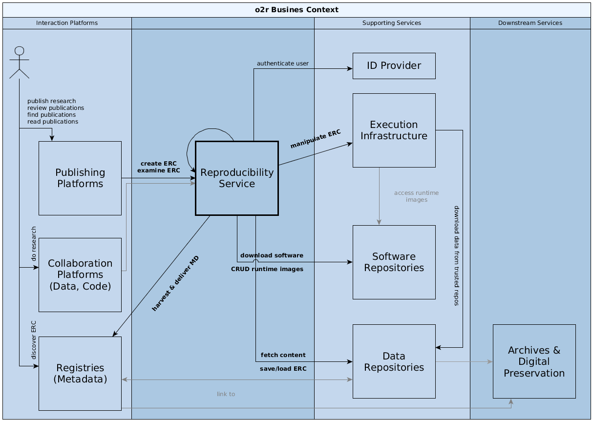

Software architecture for Opening Reproducible Research
1. Introduction and Goals
1.1 Requirements Overview
The system must provide a reliable way to create, execute, and manipulate reproducibility packages of computational resesearch. At its core is the Executable Research Compendium (ERC), see specification and the publication "Opening the Publication Process with Executable Research Compendia"
1.2 Quality Goals
- Transparency
- The system must be transparent to allow scrutiny required by a rigorous scientific process.
- Separation of concern
- The system must integrate with existing platforms and focus on the core functionality. It must not replicate existing functionality such as storage or persistent identification.
- Flexibility & modularity
- In regard to the research project setting, the system components must be well seperated, so that functions can be developed independently, e.g. using different programming languages. This allows different developers to contribute effeciently.
1.3 Stakeholders
| Role/Name | Goal/point of contact | Required interaction |
|---|---|---|
| Author (scientist) | publish ERC as part of a scientific publication process | - |
| Reviewer (scientist) | inspect ERC during a review process from a review platform | - |
| Co-author (scientist) | contribute to ERC during research (e.g. cloud based) | - |
| Reader (scientist) | view and interact with ERC on a journal website | - |
| Publisher | increase quality of publications in journals with ERC | - |
| Curator/preservationist | ensure research is complete and archivable using ERC | - |
| Operator | provide infrastructure to researchers at my university to collaborate and conduct high-quality research using ERC | - |
| Developer | use and extend the tools around ERC | - |
Some of the stakeholders are accompanied by user scenarios in prose.
2. Architecture constraints
The few constraints on this project are reflected in the final solution. This section shows them and if applicable, their motivation. (based on biking2)
2.1 Technical constraints
| Constraint | Background and/or motivation | |
|---|---|---|
| TECH.1 | Only open licenses | All third party software or used data must be available under a suitable code license, i.e. either OSI-approved or ODC license. |
| TECH.2 | OS independent development and deployment | Server applications must run in well defined Docker containers to allow installation on any host system and not limit developers to a specific language or environment. |
| TECH.3 | Lower security risks, do not store secure information | The team members experience and available resources do not allow for handling information with security concerns, so no critial data, such as passwords, must be stored in the system. |
2.2 Organizational constraints
| Constraint | Background and/or motivation | |
|---|---|---|
| ORG.1 | Team and schedule | http://o2r.info/about |
| ORG.2 | Do not interfere with existing well-established peer-review process | This software is not going to change how scientific publishing works, nor should it. While intentioned to support public peer-reviews, open science etc., the software should be agnostic of these aspects. |
| ORG.3 | Only open licenses | All created software must be available under an OSI-approved license, documentation and specifiction under a CC license. |
| ORG.3 | Version control/management | Code must be versioned using git and published on GitHub. |
2.3 Conventions
| Constraint | Background and/or motivation | |
|---|---|---|
| CONV.1 | Provide architecture documentation | Based on arc42 (template version 7.0). |
| CONV.2 | Reasonably follow coding conventions | Typical project layout and coding conventions of the respective used language should be followed as far as possible. However, we explicitly accept the research project context and do not provide full tests suites or documentation beyond what is needed by project team members. |
| CONV.3 | Documentation is English | International research project, must be understandable by anyone interested. |
| CONV.4 | Use subjectivization for server component names | Server-side components are named using personalized verbs or professions: muncher, loader, transportar. All git repositories for software use an o2r- prefix, in case of server-side components e.g. o2r-shipper. |
| CONV.5 | Configuration using environment variables | Server-side components must be configurable using all caps environment variables prefixed with the component name, e.g. SHIPPER_THE_SETTING, for required settings. Other settings should be put in a settings file suitable for the used language, e.g. config.js or config.yml. |
3. System scope and context
3.1 Business context

| Communication partner | Exchanged data | Technology/protocol |
|---|---|---|
| Reproducibility service, e.g. o2r | publication platforms utilize creation and execution services of ERC, reproducibility service uses repositories to retrieve software artifacts, store runtime environment images, and save complete ERC | HTTP APIs |
| Publication platform | users access ERC status and metadata via search results and paper landing pages; review process integrates ERC details and control; | system's API using HTTP with JSON payload |
| ID provider | retrieve unique user IDs, user metadata, and authentication tokens; user must log in with the provider | HTTP |
| Execution infrastructure | ERC can be executed using a shared/distributed infrastructure | HTTP |
| Data repository | the reproducibility service fetches (a) content for ERC creation, or (b) complete ERC, from different sources and stores crated ERC persistently at suitable repositories | HTTP, FTP, WebDAV, git |
| Registry | the reproducibility service can deliver metadata on published ERC to registries/catalogues/search portals, but also retrieve/harvest contextual metadata during ERC creation; users discover ERC on these platforms | (proprietary) HTTP APIs, persistent identifiers (DOI), OAI-PMH |
| Software repository | software repository provide software artifacs during ERC creation and store executable runtime environments | HTTP APIs |
3.2 Technical context
All components use HTTP over cable networks connections for communication of all exchanged data (metadata documents, ERC bundles, Linux containers, etc.)
4. Solution strategy
This section provides a short overview of architecture decisions and for some the reasoning behind them.
Web API
The developed solution is set in an existing system of services, and first and foremost must integrate well with these systems, focussing on the specific missing features of building and running ERCs. These features are provided via a well-defined RESTful API.
Microservices
To allow a dynamic development and support the large variety of skills, all server-side features are developed in independend microservices. These microservices handle only specific functional parts of the API and allow independent development and deployment cycles. Core components are developed using server-side JavaScript based on Node.js while other components are implemented Python.
We accept that this diversification increases complexity of both development and testing environments and the deployment of said services.
Required documentation is minimal. The typical structure should follow common practices.
Storage and intra-service communication
In accordance with the system scope, there is no reliable storage solution implemented. The microservices simply share a common pointer to a local file system path. Storage of ERC is only implemented to make the solution independent during development and for the needs of core functionality (temporal storage), but it is not a feature the solution will eventually provide.
The unifying component of the architecture is the database. It is known to all microservices.
Some microservices communicate via an eventing mechanism for real-time updates, such as the search database and the component providing live updates to the user via WebSockets- The eventing is based on the operation log of the database (which is normally used to synchronise database nodes). This is a clear misuse of an internal feature, but a lot simpler than maintaining a full-blown eventing solution.
Demonstration, user data & authentication
To be able to demonstrate the system, a browser-based client application is developed. It uses the RESTful API to control the system. OAuth 2.0 is used for authentication and minimal information, which is already public, is stored for each user. This information is shared between all services that require authentication via the database.
The client application manages the control flow of all user interactions.
Tools
If standalone tools are developed, they should provide a command-line interface (CLI) that allows integration into microservices when needed. Thanks to the container architecture and the controlled, we don't need to worry about documentattion for or distribution/packaging of these tools. It must only be ensured they are correctly installed using the microservice's Dockerfile. The only required documentation is for the installation into a container and usage of the CLI.
5. Building block view
5.1 Refinement Level 1
5.1.1 Blackbox Publication Platforms
Publications platforms are the primary online interaction point of users with scientific works. Users consume publications, e.g. browsing, searching, and reading. Users create publications, e.g. submitting to a scientific journal.
5.1.2 Blackbox ID Provider
Identification information of distributed systems is crucial, and for security reasons as well as for limiting manual reproduction of metadata, a central service can provide all of
- unique identification of users and metadata on users,
- authentication of users, and
- metadata on a user's works, e.g. publications or ERC.
5.1.3 Blackbox Execution Infrastructure
The execution infrastructure provides CPU time and temporary result storage space for execution of ERC, both "as is" and with manipulation, i.e. changed parameters.
5.1.4 Blackbox Data Repositories
Data repositories are all services and platforms that store data but not software. They may be self-hosted or public free platforms. They are used both for loading content that is used to build an ERC and for storing the ERC created by the reproducibility service.
5.1.5 Blackbox Registries
Registries are metadata indexes or catalogues.
They are recipients of metadata exports by the reproducibility service to share information about ERC, e.g. add a new ERC to an author's profile. This requires the reproducibility services to translate the internal metadata model into the recipients data model and encoding.
They are sources of metadata during ERC creation when the information in the fetched content is used to query registries for additional information which can be offered to the user.
5.1.6 Blackbox Software Repositories
Software repositories are a source and a sink for software at different abstraction levels. They are a source for software artifacts or packages, such as system packages in install a library or language-specific extension packages. They are a sink for executable images of software, which comprise a number of software artifacts, for a specific ERC instance.
5.2 Refinement Level 2
5.2.1 Whitebox Publication Platforms
Publication platforms can be roughly divided into two groups. They can be specific journals hosted independently, such as JStatSoft, or be a larger platform provided by a publisher to multiple journals, such as ScienceDirect, MDPI, SpringerLink, or PLOS.
Integration with the reproducibility service can happen via plug-ins to open platforms, e.g. OJS, or by bespoke extensions based on the service's public API.
5.2.2 Whitebox ID Provider
The reproducibility service uses ORCID to authenticate users and retrieve user and works metadata.
Internally, the user's public ORCID is the main identifier.
5.2.3 Whitebox Execution Infrastructure
Such an infrastructure could be either self-hosted, e.g. Docker Swarm-based, or use a cloud service provide, such as Amazon EC2, Docker Cloud, or even use contrinuous integration platforms such as Travis CI or Gitlab CI.
5.2.4 Whitebox Data Repositories

Collaboration platforms, e.g. ownCloud/Sciebo, GitHub, ShareLatex, OSF, allow users to create, store, and share their research. The reproducibility service fetches contents for building an ERC from these platforms based on public links, e.g. GitHub repository or Sciebo shared folder. It is possible that ERC creation is linked persistently to such collaboration platforms and updates to a shared storage cause ERC creation, execution etc.
Protocols: WebDAV, ownCloud, HTTP, git
Domain data repositories, e.g. PANGAEA or GFZ Data Services, can be accessed by the reproducibility service during creation and execution of ERC to download data. Allowing access to data repositories reduces data duplication but requires control over/trust in the respective repository.
Protocol: HTTP APIs
Generic Repositories, e.g. Zenodo, Mendeley Data, Figshare, OSF, provide (a) access to complete ERC stored in repositories for inspection and execution by the reproducibility service, and (b) storage of created ERC. repositories.
The reproducibility service does not persistently store anything.
Protocols: (authenticated) HTTP APIs
Archives, e.g. using an installation of Archivematica, might provide long-term preservation of ERC. Preservation lies in the responsibility of the repository, which might save the hosted content to an archive, or an archive harvests a repository.
Protocol: HTTP carrying bitstreams and metadata
5.2.5 Whitebox Registries
TBD (CRIS, DataCite, Google Scholar, Scopus, ...)
5.2.6 Whitebox Software Repositories

5.2.6.1 Blackbox Package repositories
Package repositories are used during ERC creation to download and install software artifacts for specific operating systems, e.g. Debian APT or Ubuntu Launchpad, for specific programming languages or environments, e.g. CRAN, or from source, e.g. GitHub.
5.2.6.2 Blackbox Container registries
Container registries such as Docker Hub, Quay, self-hosted Docker Registry 2.0 or Amazon ERC, store executable images of runtime environments. They can be used to distribute the runtime environments across the execution infrastructure and provide an intermediate ephemeral storage for the reproducibility service.
5.2.7 Whitebox Reproducibility Service

5.2.7.1 Blackbox Webserver
A webserver handles all incoming calls to the API and distributes them to the respective microservice. A working nginx configuration is available in the test setup.
5.2.7.2 Blackbox UI
The UI is a web application based on Angular JS, see o2r-platform. It connects to an execution microservice (µservice) for real-time WebSocket-based notifications.
5.2.7.3 Blackbox microservices
The reproducibility service uses a microservice architecture to seperate functionality defined by the web API specification into manageable units.
This allows scalability (selected µservices can be deployed as much as needed) and technology independence for each use case and developer. The µservices all access one main database and a shared file storage.
5.2.7.4 Blackbox Tools
Some functionality is developed as standalone tools and used as such in the µservices instead of re-implementing features. These tools are integrated via their command line interface (CLI).
5.2.7.5 Blackbox Database
The main database is the unifying element of the microservice architecture. All information shared between µservices or transactions between microservices are made via the database, including session state handling (= authentication).
A search database/index is used for full-text search and advanced search queries.
The database's operation log, normally used for synchronization between database nodes, is also used for
- event-driven communication between microservices, and
- synchronization between main document database and search index.
5.2.7.6 Blackbox Ephemeral file storage
After loading from external sources and during creation of ERC, the files are stored in a file storage shared between the µservices. The file structure is known to each microservice and read/write operations happen as needed.
5.3 Refinement Level 3
5.3.1 Whitebox µservices
Each microservice is encapsulated as a Docker container running at its own port on an internal network and only serving its respective API path.
For testing or developing the o2r-platform GitHub project contains docker-compose configurations to run all microservices, see the repository's directory /test and check the projects README.md for instructions.
ERC loading, building, and access
| Project | API path | Language | Description |
|---|---|---|---|
| muncher | /api/v1/compendium |
JavaScript (Node.js) | core component for container execution and CRUD for compendia and jobs |
| finder | /api/v1/search |
JavaScript (Node.js) | discovery and search, synchronizes the database with a search database (Elasticsearch) and exposes read-only search endpoints |
| contentbutler | ~ /data/ |
JavaScript (Node.js) | access to content of compendia, reads file-base storage |
| transportar | ~* \.(zip|tar|tar.gz) |
JavaScript (Node.js) | downloads of compendia in zip or (gzipped) tar formats |
| loader | under development |
JavaScript | load workspaces from repositories and cloud platforms |
| manipulator | under development |
JavaScript | provide backend containers for interactive ERCs |
ERC exporting
| Project | API path | Language | Description |
|---|---|---|---|
| shipper | /api/v1/shipment |
Python | save compendia to repositories and archives |
ERC execution
| Project | API path | Language | Description |
|---|---|---|---|
| muncher | /api/v1/job |
JavaScript (Node.js) | core component for container execution and CRUD for compendia and jobs |
| informer | ~* \.io |
JavaScript (Node.js) | socket.io-based WebSockets for live updates to the UI based on database event log |
Authentication
| Project | API path | Language | Description |
|---|---|---|---|
| bouncer | /api/v1/auth, /api/v1/user/ |
JavaScript (Node.js) | authentication service and user information (whoami) |
5.3.2 Whitebox database
Two databases are used.
MongoDB document database with enabled replica-set oplog for eventing.
Collections:
userssessionscompendiajobsshipments
The MongoDB API is used by connecing µservices via suitable client packages, which are available for all required languages.
Elasticsearch search index, kept in sync with the main document database by the µservice finder.
The ids are mapped to support update and delete operations.
Index: o2r
Types:
compendiajobs
The search index is read by the UI via a read-only proxy to the regular Elasticsearch API.
5.3.3 Whitebox tools
| project | language | description |
|---|---|---|
| meta | Python | scripts for extraction, translation and validation of metadata |
| containeRit | R | generation of Dockerfiles based on R sessions and scripts |
5.3.4 Whitebox ephemeral file storage
A host directory is mounted into every container to the same location: /tmp/o2r:/tmp/o2r
Credits
This specification and guides are developed by the members of the DFG-funded project Opening Reproducible Research.

Opening Reproducible Research (o2r) is a DFG-funded research project by Institute for Geoinformatics (ifgi) and University and Regional Library (ULB), University of Münster, Germany. Building on recent advances in mainstream IT, o2r envisions a new architecture for storing, executing and interacting with the original analysis environment alongside the corresponding research data and manuscript. This architecture evolves around so called Executable Research Compendia (ERC) as the container for both research, review, and archival.
License

The o2r architecture specification is licensed under Creative Commons CC0 1.0 Universal License, see file LICENSE.
To the extent possible under law, the people who associated CC0 with this work have waived all copyright and related or neighboring rights to this work.
This work is published from: Germany.
About arc42
arc42, the Template for documentation of software and system architecture.
By Dr. Gernot Starke, Dr. Peter Hruschka and contributors.
Template Revision: 7.0 EN (based on asciidoc), January 2017
© We acknowledge that this document uses material from the arc 42 architecture template, http://www.arc42.de. Created by Dr. Peter Hruschka & Dr. Gernot Starke